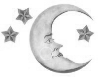

<!doctype html>
<html lang="en">
  <head>
    <!-- Required meta tags -->
    <meta charset="utf-8">
    <meta name="viewport" content="width=device-width, initial-scale=1">

    <!-- Bootstrap CSS -->
    <link href="https://cdn.jsdelivr.net/npm/bootstrap@5.0.0-beta1/dist/css/bootstrap.min.css" rel="stylesheet" integrity="sha384-giJF6kkoqNQ00vy+HMDP7azOuL0xtbfIcaT9wjKHr8RbDVddVHyTfAAsrekwKmP1" crossorigin="anonymous">
    <!-- Custom CSS -->
    <link rel="stylesheet" href="index.css">
    <title>Chirstian Vimu</title>
        <!--HEADER-->
        <section id="header" class="theme-night">
          <div class="container-fluid text-center">
            <div class="row">
              <div class="col">
                <h1 class="text-center pt-md-2 pt-4">HOLA MUNDO</h1>
              </div>
              <div class="col-4">
                <button type="button" class="btn btn-outline-secondary"><a></a></button>
              </div>
            </div>
          </div>
        </section>
        <!--/HEADER-->
  </head>
  <body>

    <!-- Jquery -->
    <script src="https://code.jquery.com/jquery-3.5.1.js" integrity="sha256-QWo7LDvxbWT2tbbQ97B53yJnYU3WhH/C8ycbRAkjPDc=" crossorigin="anonymous"></script>
    <!-- Custom JS -->
    <script src="/index.js"></script>
    <!-- Popper -->
    <script src="https://cdn.jsdelivr.net/npm/@popperjs/core@2.5.4/dist/umd/popper.min.js" integrity="sha384-q2kxQ16AaE6UbzuKqyBE9/u/KzioAlnx2maXQHiDX9d4/zp8Ok3f+M7DPm+Ib6IU" crossorigin="anonymous"></script>
    <!-- Bootstrap JS -->
    <script src="https://cdn.jsdelivr.net/npm/bootstrap@5.0.0-beta1/dist/js/bootstrap.min.js" integrity="sha384-pQQkAEnwaBkjpqZ8RU1fF1AKtTcHJwFl3pblpTlHXybJjHpMYo79HY3hIi4NKxyj" crossorigin="anonymous"></script>
        <!--/SCRIPTS-->
  </body>
</html>